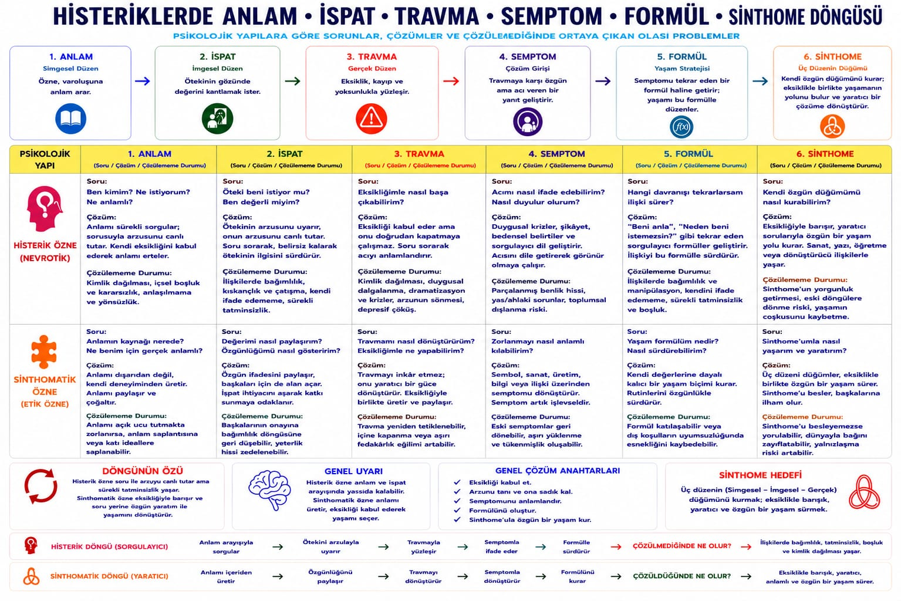
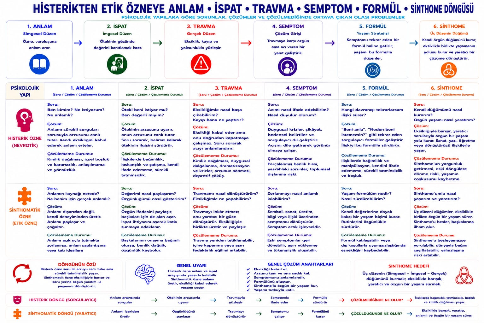

Nevroz · Che vuoi?
Histerik özne
Ne istiyorsun? Senin için neyim? Cevabı kapatmamak arzuyu canlı tutar.
Tiyatro kişiliği değil. Varlık Öteki'nin arzusuna gönderilir. Tipik nesne bakış nesnesidir.


Nevroz · Che vuoi?
Ne istiyorsun? Senin için neyim? Cevabı kapatmamak arzuyu canlı tutar.
Tiyatro kişiliği değil. Varlık Öteki'nin arzusuna gönderilir. Tipik nesne bakış nesnesidir.

